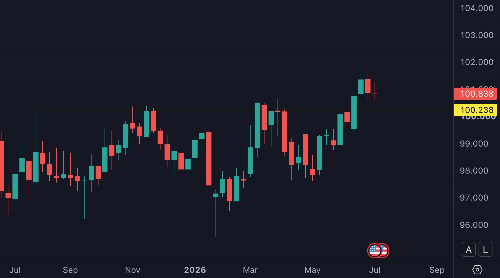

Since 1983, Hong Kong's dollar has been pinned to the U.S. dollar at a fixed rate. That commitment means Hong Kong's central bank cannot set its own interest rates. It borrows the Fed's. When the Fed leans hawkish, Hong Kong's banking system tightens automatically, whether or not the local economy needs it. That chain pulled the Hang Seng down 11% in the first half of 2026, then handed 3% of it back in a single session when a soft U.S. jobs report on July 3 eased pressure on the same chain.
On July 3, 2026, the U.S. government reported that employers had added 57,000 jobs in June, about half the 110,000 economists expected. No Hong Kong company reported earnings that week. No Hong Kong policy changed. No property developer filed a notice to the exchange. The next trading session, the Hang Seng Index rose roughly 3%, its best single day in weeks.
A market seven time zones from Washington moved on a number that measured hiring at U.S. companies. That is not a coincidence, and it is not sentiment. It is a mechanical link, built into how Hong Kong's currency works, and it runs in both directions.
The story starts in 1983, with a promise that has never been renegotiated.
A promise made in 1983
Hong Kong's currency is not free floating. Since October 1983, the Hong Kong dollar has been pinned to the U.S. dollar at close to 7.78, through an arrangement called the Linked Exchange Rate System. It is not a target that Hong Kong's monetary authority, the HKMA, aims for and sometimes misses. It is a currency board: every Hong Kong dollar in circulation is backed, in full, by U.S. dollar reserves the HKMA holds.
That structure has one consequence that matters more than any other for stocks: Hong Kong has no independent interest rate policy. It cannot cut rates to support a slowing local economy while the Fed is hiking, the way the European Central Bank or the Bank of Japan can. The Fed decides. Hong Kong follows.
The mechanism sits at the edges of the currency band, set between 7.75 and 7.85 per dollar. At 7.75, the HKMA sells Hong Kong dollars and loosens the banking system. At 7.85, it buys Hong Kong dollars back, which tightens it. That second lever, tightening at the weak end of the band, is the one equity investors feel first. It runs through HIBOR, the rate Hong Kong banks charge each other for overnight loans, the local equivalent of a base rate. When the HKMA is forced to defend the currency, HIBOR rises, whether or not Hong Kong's own economy has asked for higher rates.
Why Hong Kong's banks tighten when the Fed does
Here is the chain, one link at a time. The Fed signals higher rates for longer, as it did on June 17, 2026, when nine of eighteen Federal Reserve officials penciled in another hike for the year. Traders holding Hong Kong dollars notice that U.S. Treasury bills now pay more than local deposits, with no currency risk given the peg. Some of them sell Hong Kong dollars and buy dollars instead. Demand for the local currency softens, and the exchange rate drifts toward the weak edge of the band, 7.85.
At that point the HKMA has no choice. It must buy Hong Kong dollars and sell U.S. dollars to hold the line, which drains cash out of the local banking system. Banks call this cash cushion the Aggregate Balance. A thinner cushion means Hong Kong dollars become scarcer to borrow overnight, and HIBOR climbs in response. Every company financing inventory, construction, or working capital in Hong Kong dollars now pays more to do it.
The scale of the 2026 drain is not abstract. The Aggregate Balance fell to roughly HK$54 billion by the end of May 2026. That came after the HKMA pulled around HK$129 billion out of the system that month alone to defend the peg. That is the thinnest the cushion has been since the 2022 squeeze. Back then, the Aggregate Balance fell from over HK$340 billion to near HK$50 billion and sent one-month HIBOR to a 14-year high. HKMA's next official update, covering June, is due July 14. Until then, HK$54 billion is the latest confirmed figure for Hong Kong's banking system. That scarcity is only half of what a stronger dollar does to Hong Kong stocks.
Why every stock's price tag shrinks at the same time
A second, separate channel runs alongside the liquidity squeeze, and it hits valuations directly rather than through bank funding costs. Every stock is worth the cash it is expected to hand shareholders in the future, discounted back to today's dollars. The discount rate is whatever an investor could earn instead. When U.S. Treasury yields rise, that rate rises for every stock on earth, Hong Kong included, because the alternative just got more attractive.
Growth and technology names absorb the most damage, because more of their expected cash sits years out rather than next quarter. A higher discount rate erodes a distant dollar far more than a near one. Hang Seng Tech makes up close to 40% of the index and leans heavily toward exactly that kind of long-dated earnings profile.
The Hang Seng fell from about 23,400 to 22,671 between June 18 and 26, roughly 3%, in the days right after the Fed's hawkish signal. No Hong Kong earnings news drove that move. It was the valuation math re-pricing on its own, before the liquidity squeeze had even finished draining the banking system.
Where the money actually goes
Two forces then pulled real cash out of Hong Kong stocks, on top of the liquidity and valuation channels above.
One. Once U.S. Treasury bills pay meaningfully more than Hong Kong deposits, a simple trade opens up: borrow Hong Kong dollars cheaply, convert to U.S. dollars, and hold short-term U.S. paper for the spread, with the peg removing the currency risk. That trade is not speculative. It is arithmetic, and once the gap exists, capital moves toward it automatically. On June 26, 2026, the Hong Kong dollar weakened to 7.8417 per dollar, a ten-month low, the visible footprint of that flow.
The tracker below scores that trade directly: where the Hong Kong dollar sits in its own band, how the U.S. short rate is moving, and whether the broad dollar trend confirms it.
Two. In May and June 2026, China's securities regulator and seven other government agencies jointly announced a two-year crackdown on offshore brokerages serving mainland investors, including Futu, Tiger Brokers, and Longbridge. Mainland clients can now only sell existing positions and withdraw funds. New purchases through these platforms are banned outright. Futu alone faces roughly 1.85 billion yuan in fines, and regulators estimate 200 to 250 billion yuan of mainland-linked Hong Kong holdings are affected. That policy has nothing to do with the Fed. It adds a second, independent group of forced sellers on top of the carry trade outflow, at the same moment.
Put the two together and Hong Kong stocks faced outflows from two directions at once in June 2026. Dollar-chasing capital left on the peg mechanics. Mainland capital left on Beijing's own timetable.
What the data actually shows
If this chain is real, the dates should line up. They do.
| Date | Event | Effect |
|---|---|---|
| June 17 | Fed holds rates, dot plot turns hawkish for 2026 | U.S. yields firm up, widening the gap over Hong Kong deposits |
| June 18-26 | Hang Seng falls from 23,400 to 22,671 | Valuation channel re-prices before any local earnings news |
| June 26 | HKD weakens to 7.8417, a 10-month low | Visible footprint of the carry trade outflow |
| May-June | China's securities regulator and 7 other agencies restrict offshore brokerage flows | A second, independent group of forced sellers hits at the same time |
| July 3 | U.S. jobs report misses badly (57,000 vs. 110,000 forecast) | Rate-hike odds fall, easing pressure on the whole chain |
| July 4 | Hang Seng rebounds roughly 3% in a single session | Same mechanism, running in reverse |
The July 4 rebound is the cleanest proof in the sequence. Nothing about a single Hong Kong company changed between July 3 and July 4. What changed was how many rate hikes traders expected the Fed to deliver. The valuation math ran the same equation in reverse, and the index moved accordingly, in a single day.
What could break this chain
The July 4 rebound is the proof of this, not a footnote to it. One soft jobs report undid roughly a quarter of the June drop in a single session. A chain built on Fed expectations moves in both directions with equal speed. Reading this as a permanent headwind mistakes a rate-sensitive mechanism for a one-way trend.
The brokerage crackdown has nothing to do with the Fed and did not arrive on a monetary policy calendar. If Beijing eases the restrictions, or tightens them further, that flow moves independently of anything happening in Washington. Treating the two channels as a single combined signal risks missing a reversal that only shows up in one of them.
The dollar index (DXY) broke above the 100.24 level in late June 2026, a level that had rejected two prior rallies, in November 2025 and March 2026. Price is now holding above it on the pullback, last at 100.84, testing whether that old resistance holds as new support.
Confirmation here opens room toward the 104 to 105 area, a move of roughly 3 to 4% from current levels. That size move is larger than the leg that already drained HK$129 billion from Hong Kong's banking system in May. That same leg cut 11% off the Hang Seng in the first half of 2026.
If the setup plays out, the same three channels above do not ease. They intensify: a wider HKD, more Aggregate Balance drained, HIBOR pushed higher again, valuations compressed further. The condition that reverses this reading is the same one already at work in the July 4 rebound: another soft print from the U.S. side. Absent that, a dollar breakout of this size is the base case getting stronger, not the base case breaking.
The Hang Seng's own chart adds a second, independent signal pointing the same way. The index's sharp reclaim off its recent low is running directly into a descending resistance line drawn from the prior high. That kind of level has historically slowed momentum more often than it has confirmed a clean break higher. That is not a forecast that the bounce fails. It is a reason to treat the reclaim as contested until price actually closes through that line, not before.

How to read the chain going forward
This is not a forecast for where the Hang Seng goes next. It is a description of the pipe the index runs through. Fed policy expectations move first, HIBOR and bank liquidity follow with a lag of a few weeks, and equity valuations react to both in real time. Reading Hong Kong stock moves without checking the Fed calendar first is reading half the chain.
| Scenario | Observable Signal | Implication for HK Stocks |
|---|---|---|
| Fed stays hawkish | Aggregate Balance keeps draining below HK$50B, HIBOR climbs further | Continued multiple compression, especially in long-duration tech names |
| Fed data softens further | More jobs or inflation misses, hike odds keep falling | Liquidity chain eases, valuation channel reverses as it did July 4 |
| China policy escalates | Further restrictions on offshore mainland brokerage flows | A second, Fed-independent outflow layers on top of whichever Fed scenario is in force |
The peg gave Hong Kong four decades of currency stability, and it is not going anywhere. The price of that stability is that Hong Kong's stock market answers to a central bank it does not control.
For the financials-specific read on this same rate regime, see the rate convexity tracker →, which scores the HK banking sector against the same Fed-driven cycle described here.
Sources
- How the Linked Exchange Rate System works: HKMA, accessed July 2026
- Aggregate Balance data: HKMA Quarterly Bulletin, March 2026
- 2022 HIBOR squeeze comparison: Reuters, November 2022
- Fed June 2026 dot plot: CNBC, June 17, 2026
- HKD weakening to 7.8417: HKSAR Government press release, June 26, 2026
- China offshore brokerage crackdown: CNA, June 2026
- Hang Seng Index historical levels: Investing.com, accessed July 2026
- U.S. June 2026 jobs report (57,000 vs. 110,000 forecast): Bureau of Labor Statistics release, July 3, 2026